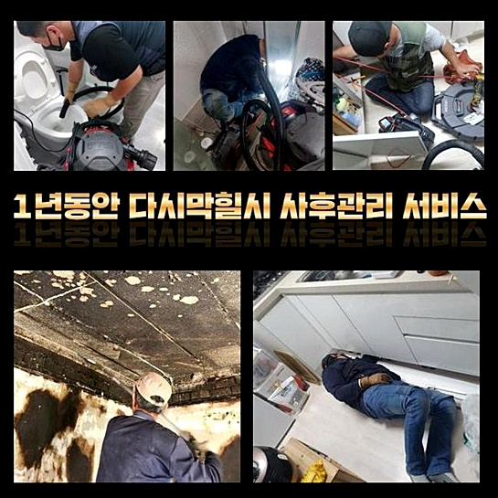
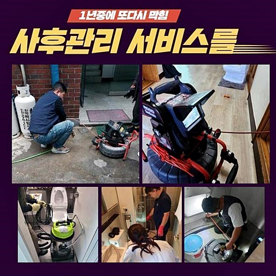
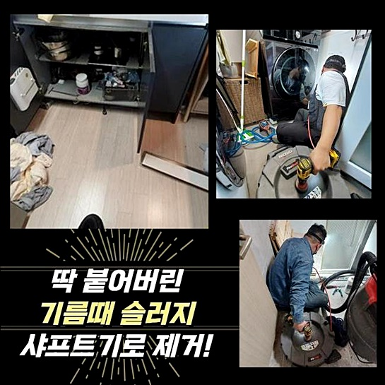
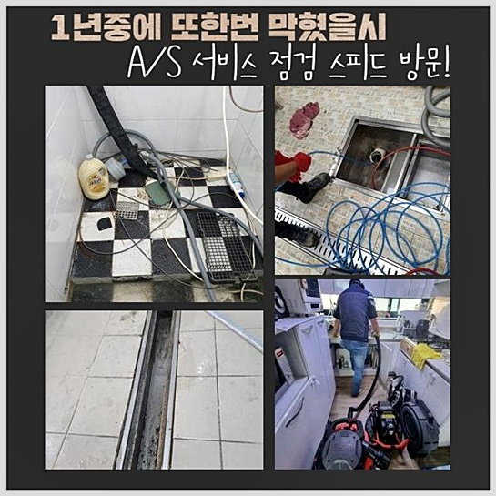
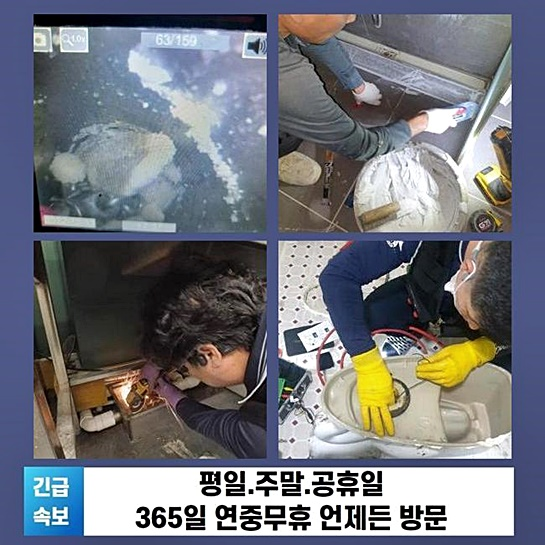
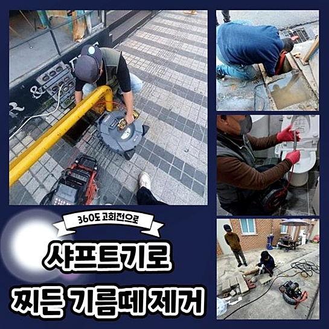
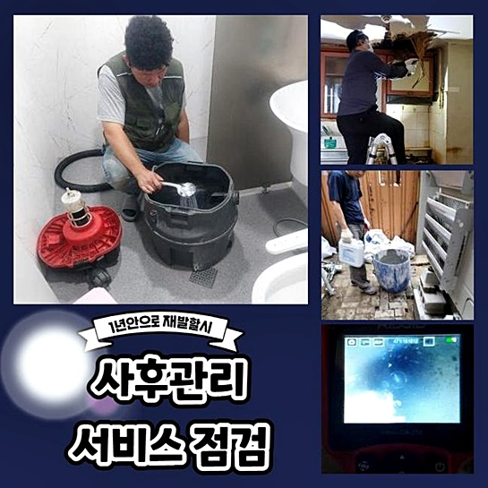

🏠 고양시 내곡동하수도뚫음 고양동 하수관고압세척 배관전문
용인시 처인구 배관막힘 전문 시공 후기

📋 작업 개요
- 위치: 용인시 처인구, 수원시 영통구, 화성시 동탄
- 서비스 유형: 배관막힘, 고압세척, 내시경점검
- 작업 일시:
- 업체명: 하수구수사대 (010-5615-2118)
🔍 문제 상황
고양시 내곡동하수도뚫음 고양동 하수관고압세척 배관전문
하수관로에 막힘의 증상이 일어나면 허둥지둥 하게됩니다
지금부턴 자주 발생되는 문제들에 대하여 얘기할테니 읽어주시면 도움들이 있다고 생각해요!
실생활중에 이용하시는 수도는 개별적으로 배수되기보다는 집수시설로 가기위한 메인관으로 모이려고 구조적으로 설계되어있고 결국 집수시설로 빠지죠
그렇기에 외관상 관찰되지 않아도 배관들은 지면밑에 부분에 유기적으로 자리하고 있는 탓에 막혀버리는 문제들이 발발했을 때 여기저기에 잔해물이 축적되어 문제들이 발생될테죠
문제들이 거듭되면 특정 구간에서 배수될때 애먼 데에서 역류할수도 있고 집수정으로 별안간 배출되지않게되는 사태가 생겨나서 해당 상황에 놓여졌다면 전문해결사와 서둘러 해결해야합니다
지금부턴 씽크대 배수관에 증상들이 생겨버린 모습들로서 사용 중에 세탁실에도 증상들이 생겨 저희전문진들에게 성급하게 내방해달라 연락하셨는데요
도착하여 진단해보았더니 싱크대 하수하수도는 세탁기가 있는 배수구가 이어진 구조로 되있었고 세탁실까지의 피해까지 나타난걸로 추측했죠

🔎 원인 분석
💡 전문가 진단: 정밀 진단 장비를 사용하여 슬러지의 고착 여부를 판명하고 타격/세척 작업을 실시했습니다.
단지 싱크대로 빠지질 못해 피해가 커진건데 시간들이 흐르면서 슬러지가 점차 심층부로 내려가 쌓여버려서 연결된 배수관이 막히는 경우들이 있답니다
문제양상 관찰을 위하여 주방에서 물빠짐 내용들을 보니 기름기와 오수가 다용도실로 역류되는것을 목격했고 세탁기 배수관 피해의 까닭이 주방배수구와 연관이 있는것임을 확인했죠
고객분은 주방과 세탁기 모집수부분으로에서 악취자체가 발생하여 생활양식 선에도 피해들을 받아서 적절하게 클린용액을 사용하면서 증상을 완화시키셨대요
간단히 보았을때도 하수관에 오물이 축적되어있는데 개수대를 쓰며 반복적으로 솟구치는 바람에 수직배관으로 내려가야 할 이물질이 그대로 솟구쳐버린 장소였습니다
해당 구조의경우 다가구세대에서 어렵지않게 볼 수 있으나 해당 사례처럼 동시에 이런저런의 문제들이 발생한다면 다양한 측면에서 난처함만이 남을거에요
의뢰자에게 하수관의 내용을 상세하게 말씀드리고 빠르게 해결하게끔 장치들을 꺼내어 제대로 된 수리에 팔을 걷어 붙혔어요
1순위로 석션으로 안빠지던 오수들을 배출시켜 청소하는 시공들을 진행하고 관로를 따라 신속히 빨리는 소리를 들었죠
수건등으로 틈들을 없게 하고 빨아당기니 배관의 깊숙한 지점에 존재한 잔해물을 청소했죠

🔧 작업 과정
오늘과같이 막힌 하수관에서 석션기기로 통수로를 마련해내면 내시경장치를 사용하여 안쪽의 모습을 꼼꼼히 확인합니다
어디에 막히게되었으며 관로에 오물이 누적되면서 혹여나 손상이 없는지 다양한 방면으로 확인하는게 중요합니다
내시경장비를 이용해보니 개수대서 뻗어나온 하수관과 다용도실의 설비에까지 슬러지들이 다량이라 막힌 상태였고 끈끈히 벽에 흡착되어있고 딱딱하게 고착되어버린 이물질도 상당수였고 막히게 된 까닭을 정확하게 주시해보았습니다
성공적인 작업을 이뤄내기위하여 스케일링을 준비한 다음 샤프트장치의 노즐들을 투입시켜 돌아가는 사슬부로 단단한 이물질을 사라지게 해보았습니다
오늘 방문드린 데는 세탁실과 주방라인들이 하나로 모이는 구조로써 이물제거를 하고서는 석션기기로 부유하는 찌꺼기까지 남지않도록 신경써주어 작업했죠
이번 사례를 살펴보면 각 배관에서 기기를 이용하여 이물들을 제거시켜줬으므로 빠르게 해당 문제들을 잠재웠고 벽측까지 세척되었으며 장기간 재발과 관련한 염려들은 안하셔도 되요
가용중인 샤프트의 경우 케이블자체가 얇게 되어있고 유연하므로 L자 배관이거나 꺾여 들어가는 위치까지 원활히 작업되므로 현장 출동시 반드시 마련해야하는 장치라 할 수 있어요
내측이 비좁게 된 구간이라도 라인을 투입가능한 틈만 있어도 장소 상관없이 운용될 수 있어서 작업 시 점검불가 상태가 펼쳐질까라는 우려를 느끼지않게 대응해드립니다
샤프트에 드릴들을 결합해 회전하는 방식이므로 안정적으로 회전운동을 하는 사슬이 내부 고착물을 말끔히 없애주기에 방문드린 시점에 반드시 해결합니다
끝으로 세척작업을 다하고서 배출된 부유물을 확인하니 그동안 배관 쌓인 이물들 때문에 배수장애와 악취들로 인해서 불편이 이만저만이 아니었겠구나 싶었죠
지금의 집으로 옮긴게 며칠전이라고 하셨었는데 관로들은 축조될때부터 사용되기에 내 앞의 세입자들이 깨끗하게 썼는지 인지할 수가 없으므로 어느 시점에 또 막히게 될지는 전문가들도 예상하기란 불가능에 가까워요
그럼에도 불구하고 배수관에 피해들이 본격화 되기전에 주로 보이는 수많은 징후를 이해하고 예방에 힘써 증상들에 피해를 입지않도록 하는게 우선이라고 할 수 있어요
결과 확인을 위해 싱크볼로 물을 채워넣어 온전히 빠지는지 테스트해보고 종료를 진행시켰습니다


✅ 작업 완료
배수장애는 가지각색으로 막혀버리는 사안이므로 이런 증상들이 보일땐 전문가와 서둘러 해결하세요!
증상들이 야기되었을때 의뢰인분이 일러주신 곳들로 달려가는 저희전문진은 잊지말아주시고 혹시라도 증상들이 생겼을 때 불러주시면 오차없이 수리하겠습니다
지역을 따지지않고 1시간 안쪽으로 당도가 이뤄지며 믿을 수 있는 수리로 실패없는 뚫음을 안겨드릴테니 걱정 마세요!
혹시나 의문인것이 있을 경우 주저없이 물어보세요!




⚠️ 하수구 배관 막힘 예방 및 관리 가이드
- ✅ 머리카락, 비닐, 물티슈 등 물에 분해되지 않는 이물질은 절대 흘려보내지 마세요.
- ✅ 기름기 많은 식기는 설거지 전 키친타올로 먼저 기름때를 닦아내세요.
- ✅ 주기적으로 배수구에 뜨거운 물을 가득 부어주어 유지방 고착을 방지하세요.
- ✅ 작업 후 1년 이내 재발 시 무상 A/S 보증 서비스를 제공합니다.
💡 핵심 정리
- 확실한 장비 작업(내시경 점검 및 샤프트 스케일링)으로 원인을 뿌리 뽑습니다.
- 작업 후 1년 이내에 동일한 부위 재발 시 100% 무상 A/S 서비스를 보장합니다.
- 서울 · 경기 · 인천 전 지역에 24시간 언제든 긴급 출동할 수 있도록 항시 대기 중입니다.
❓ 자주 묻는 질문 (FAQ)
🚨 용인시 처인구 배관막힘 문제로 고민이신가요?
정확한 원인 진단과 확실한 시공으로 재발 없는 해결을 약속드립니다.
24시간 긴급 출동 | 서울 · 경기 · 인천 전지역 | 1년 내 재발 시 무상 A/S